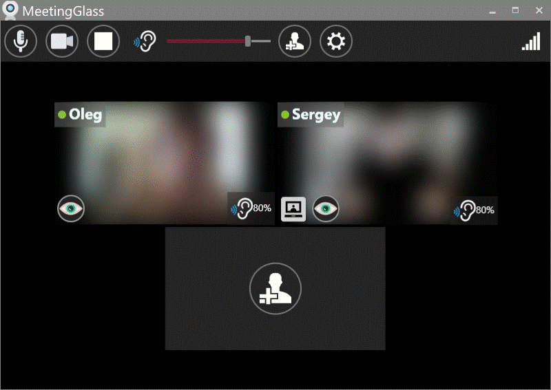

Video Meetings Through Virtual Frosted Glass
A video meeting application that recreates the natural privacy of physical frosted glass
Like physical frosted glass: You only see others when you're at the glass yourself.

Team members are looking blurry behind virtual frosted glass
Like physical frosted glass:

1. Visibility is Mutual
👤 You ⇄ 👤 Them
Your camera ON = See others
Their camera ON = See you
Like real glass: No one-way viewing.

2. Frosted by Default
Even when visible, you appear behind frosted glass. Others see your presence but not the details of what you are doing.

3. Click to Unfrost
Click to gradually unfrost a user.

4. Confirm Unfrost
You decide if you will be unfrosted or not.
5. More Features of Virtual Frosted Glass…
Designed For:
- 💼 Fatigue-free work meetings
- 🎓 Comfortable study sessions with classmates
- 👥 Relaxed meetings with friends and family
Technical Advantages:
- Comfortable video presence balanced with privacy
- Designed for spontaneous communication
- Low bandwidth consumption
- Low CPU consumption
- 1 minute install and setup
- Anonymous: No email or real name registration required
- Unlimited meeting time
- Join a meeting when Windows starts
- More advantages…
User Benefits:
- Reciprocal privacy: Only seen by those you see
- Comfortable presence on live video
- Easy long video meetings with family, friends and colleagues
- Mutual help and collaboration in real time
- Do homework together with your classmates
- Less isolated/lonely remote working
- Study in each other's presence
- Better concentration
- Having more fun together!
Get MeetingGlass
✅ Low CPU & Bandwidth · ✅ No Time Limits · ✅ No Registration · ✅ 60-Second Setup